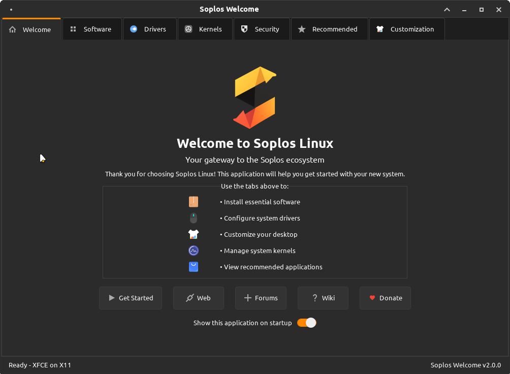
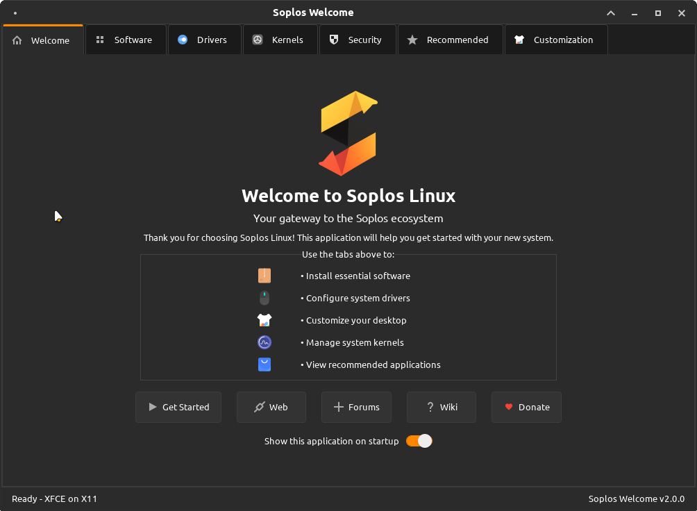

ES
ES FR
FR PT
PT DE
DE IT
IT RO
RO RU
RUOverview
Soplos Tyron is the lightweight variant of Soplos Linux, featuring the XFCE desktop environment . It's designed for users who prioritize performance, efficiency, and simplicity while maintaining a modern and attractive interface.
Performance Focused
Optimized for speed and low resource usage. Perfect for older hardware or users who want maximum performance.
Highly Customizable
XFCE's modular design allows extensive customization without sacrificing stability or performance.
User Friendly
Familiar interface design that's easy to use for both Linux newcomers and experienced users.
Battery Efficient
Excellent for laptops with longer battery life thanks to optimized power management.
Interface Tour
Desktop Layout
Tyron features a clean, minimalist desktop layout optimized for efficiency:
Clean Desktop
Minimal desktop interface focused on productivity. Clean workspace without unnecessary elements, allowing applications to take center stage.
File Manager
Thunar file manager offers fast navigation, tabs, custom actions, and plugin support for efficient file management.
System Access
Right-click desktop for quick access to settings, applications, and system configuration options.
Soplos Docklike
Tyron includes the exclusive Soplos Docklike application:
Screenshots
Example Tyron screenshots from the ISO:
 

Customization
Appearance Settings
Access appearance settings through Settings Manager → Appearance :
Themes
- Pre-installed Soplos themes optimized for XFCE
- Use Soplos Theme Manager for easy switching
- Download additional themes from xfce-look.org
- Dark and light variants available
Icons
- Multiple icon sets included
- Consistent Soplos icon theme
- Support for custom icon themes
- Scalable SVG icons for crisp display
Fonts
- Optimized font rendering
- System-wide font configuration
- Subpixel hinting support
- Easy font size adjustment
Wallpapers
- Curated Soplos wallpaper collection
- Slideshow and rotation support
- Custom wallpaper support
- Multiple monitor configurations
Desktop Customization
Customize your desktop interface through XFCE settings:
Interface Customization Options
- Add panels: Create custom panels if desired (top, bottom, left, or right)
- Desktop icons: Enable/disable and configure desktop icons
- Soplos Docklike: Use the elegant dock interface as default
- Shortcuts: Configure keyboard shortcuts for quick access
- Workspaces: Set up multiple virtual desktops
Default Applications
Tyron comes with a carefully selected set of lightweight, efficient applications optimized for performance and usability. The exact application selection is designed to provide essential functionality while maintaining system responsiveness.
Soplos Exclusive Applications
Tyron includes several exclusive Soplos applications accessible through Soplos Welcome :
 Soplos Welcome
Soplos Welcome
Welcome application that guides new users through initial setup and customization. Features include software installation, desktop customization, hardware detection, driver installation, and access to help resources.
 Soplos Welcome Live
Soplos Welcome Live
Live-ISO variant of Soplos Welcome used on the installer image to choose language, test hardware and launch the Calamares installer.
 Soplos Docklike
Soplos Docklike
Graphical tool to manage and organize icons in the XFCE panel's Docklike plugin. Provides an elegant dock-style interface with easy application organization and customization.
 Soplos GRUB Editor
Soplos GRUB Editor
Advanced graphical GTK3 editor for GRUB2 configuration. Features visual editing, theme management, custom fonts, backgrounds, boot entries, kernel parameters, and automatic backups.
 Soplos Plymouth Manager
Soplos Plymouth Manager
Boot splash screen manager for customizing Plymouth themes. Install, preview, and apply beautiful boot animations with an intuitive graphical interface.
 Soplos Theme Manager
Soplos Theme Manager
Simple and intuitive desktop theme manager. Create, save, and apply complete desktop themes easily with support for multiple desktop styles and full XFCE integration.
 Soplos Repo Selector
Soplos Repo Selector
Repository management tool for switching between software sources, finding fastest mirrors, and enabling additional repositories with a user-friendly interface.
Performance Tips
Maximize Tyron's performance with these optimization techniques:
Memory Optimization
- Disable compositor for maximum performance
- Reduce startup applications
- Use lightweight alternatives when available
- Close unused applications regularly
Visual Effects
- Disable window animations for speed
- Use simple window decorations
- Reduce panel plugins
- Choose lightweight themes
Storage Management
- Clean package cache regularly
- Remove unused packages
- Use disk cleanup tools
- Monitor disk usage
System Tuning
- Try performance kernels (Liquorix, XanMod)
- Adjust swappiness for SSD systems
- Configure power management
- Update system regularly
Quick Performance Commands
# Clean package cache
sudo apt autoclean
# Remove unused packages
sudo apt autoremove
# Check system resources
htop
# Check disk usage
df -h
# Monitor memory usage
free -hCommon Issues
Panel disappeared or corrupted
Reset the panel configuration:
# Reset XFCE panel
xfce4-panel --quit
pkill xfconfd
rm -rf ~/.config/xfce4/panel
rm -rf ~/.config/xfce4/xfconf/xfce-perchannel-xml/xfce4-panel.xml
xfce4-panel &Desktop icons not showing
Enable desktop icons in settings:
- Right-click on desktop → Desktop Settings
- Go to Icons tab
- Check "Show desktop icons"
- Configure which icons to display
Slow performance issues
Try these performance fixes:
- Disable compositor: Settings → Window Manager Tweaks → Compositor
- Reduce startup applications: Settings → Session and Startup
- Check system resources with Task Manager
- Clean system:
sudo apt autoremove && sudo apt autoclean - Consider switching to a lightweight theme
Applications not appearing in menu
Refresh the applications menu:
- Right-click on Applications menu
- Select "Edit Applications"
- Or restart the session: Log out and back in
- For manual refresh:
update-desktop-database